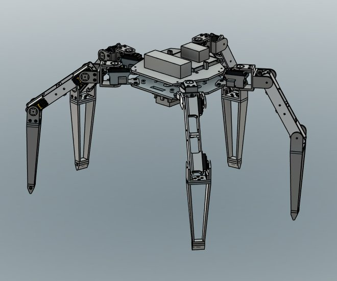
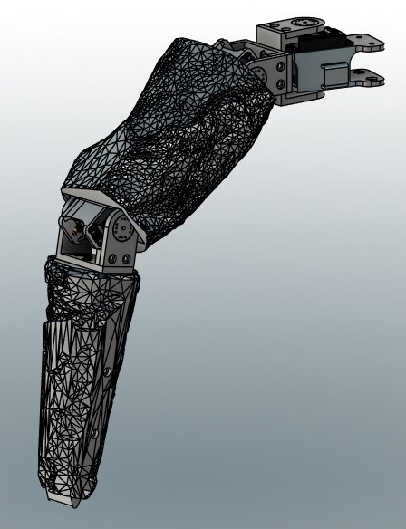

Rocky
A five-legged walking robot modeled on Rocky from Project Hail Mary. I tested its motion in a physics simulation built from my CAD model, and it now walks and emotes on real hardware. I'm currently working on the shell and more complex motion.
Problem / Goal
I loved Project Hail Mary and wanted to challenge myself by building my first real robot. I thought it would be super cool to have a real-life Rocky just chilling in my house.
The end goal is a Rocky that can wander around the house on its own and interact with people. The plan is to get there with computer vision, distance sensors, and a Rocky LLM. Along the way, it has to look like Rocky from the movie, so any change that made it more stable but less Rocky-like was out.
My Role
The physical robot is all mine. I did all of the mechanical design in Fusion 360, 3D printed and assembled the robot, and soldered and wired all of the electronics. The control code and PyBullet simulation were written with heavy help from AI. My part was deciding what Rocky needed to do, testing stability and gait in the simulation, and tracking down errors until they were resolved. My brother is taking on the vision side and future AI work.
Design Process
- Mechanical design. Every part was modeled in Fusion 360 and 3D printed. Each leg has two DS3218 servos at the hip and an MG995 at the knee. Two PCA9685 driver boards control all 15 servos from an Arduino, powered by a 3S LiPo stepped down to 6 V.
- A simulation built from the CAD. I brought the CAD model into PyBullet, a physics engine, so I could test motions before risking the hardware. Since the sim calculates real physics, the masses and inertias had to be accurate to tell whether the motors could actually lift and move everything. To make the model more accurate, I corrected the part weights exported from Fusion using the weights from the slicer.
- Sim-first testing. Every gait, pose, and emote ran in the sim first. When something failed, I pinned down which leg it was and what it did, worked out a fix, retested, and only then ran it on the robot.
- Staying upright. Rocky's odd geometry, with five legs instead of six and uneven spacing between them, made a stable walking gait a real challenge. Even with a simple wave gait, lifting certain legs moved the center of mass outside the planted feet, and Rocky would tip slightly. To fix it, I rotated where each foot rests to widen the footprint and shifted the center of mass ahead of certain lifts.
Where It Stands
Rocky has stood, walked, and emoted on real hardware. Widening the stance raised the worst-case stability margin in the simulation from 34 mm to 81 mm. The gait has improved since my last hardware test.
Right now I'm designing the shell, which is harder than I expected. I'm turning a rock-textured mesh into editable solids that loosely enclose each part. One leg is partially shelled so far, but I really dislike working with STL files.
What's Next
- Design how the shell mounts, then finish the details and print it.
- Test and refine the gait on the real robot.
- Add the Jetson Orin Nano, a camera, and distance sensors so Rocky can run vision models and reinforcement learning.
- Add more emotes.
Tools Used
Fusion 360, 3D printing, PyBullet (Python), Arduino, Claude (AI).
What I've Learned So Far
A simulation is only as good as what you put into it. Accurate part masses and friction coefficients are essential to getting results you can trust. Fusion first gave the printed parts the weight of solid plastic, so the sim said the servos couldn't lift Rocky when they actually could.
I wanted to see how capable AI is on a real project. It can write more complex code much faster than I can, but it can't see what it's doing. My job was figuring out why things were failing and describing those failures precisely, so the AI could handle the code changes.

